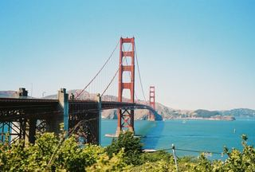
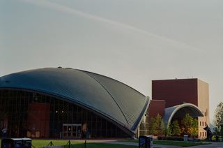
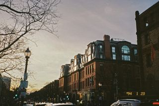

Atlas · Plate 0
Boston, Massachusetts.
David Becerra — civil engineer. This is the base sheet. Lay the tracing overlays on top with the tabs.
42.36°N · 71.06°W
Sheet I · Now
Where I am today.
- Work
- Hospitality, Rochambeau Boston (Lyons Group), 2023–present
- Discipline
- Civil Engineer — BEng, Pontificia Universidad Javeriana (2021)
- Status
- Open to work
Open to project coordination, implementation and construction-tech roles in Boston.
Ref. → Colombia · off this sheet
- Ethos ValorJan–Sep 2022
- Alpha Group Services SASJul 2021–Jan 2022
- Hidrarco SASFeb–Jul 2021
Sheet II · Photography
Structures I stop for.
Each frame pinned where it was taken. One is placed so far; the rest are waiting for a location.
Unplaced · location pending



Sheet III · Contact
Let's talk.
Based in Boston. The fastest way to reach me is email.